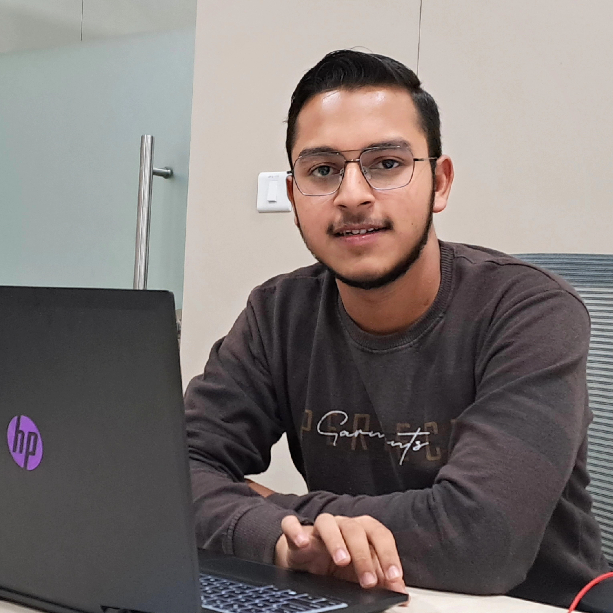

Ahmad Raza
Email: mohammadahmadraza_khan@srmap.edu.in
Registration Number: AP22110010453

Email: mohammadahmadraza_khan@srmap.edu.in
Registration Number: AP22110010453
| Bachelors of Technology - Computer Science Engineering | 2022 - 2026 | CGPA: 9.15 |
| Intermediate - PCM & Computer Science | 2020 - 2022 | Percentage: 75% |
| Research Intern [Backend Development] | September 2023 - Feburary 2024 |
• Developed scalable REST APIs for open-source large language models (LLMs). Worked on developing several
commercial products, including CustomGPTs, Multimodal and Persona-based GenAI Applications.
•
Collaborated closely with the R&D team to integrate advanced AI methodologies into production
environments. Demonstrated proficiency in the rapid adoption and implementation of new techniques such
as fine-tuning and benchmarking, to name a few.
| Academic Co-Convener | August 2023 - Present |
• Academic Representative of 7200+ students and enhancing their overall academic experience.
•
Coordinating a diverse team of more than 230 members, including ambassadors & CRs of all schools, as the
founding co-convener of Academic Wing.
• Collaborating with members of the academic council and
academic administrations to propose policies, enhancements, address student concerns, and ensure the
timely resolution of academic issues.
• Tools & technologies used: HTML, CSS, JavaScript, Python, Selenium, BeautifulSoup, REST API,
PostgreSQL,
Langchain, FastAPI
• Developed an end-to-end application utilizing innovative approaches to compare product prices on the
Government
E-Marketplace (GeM) with other E-Commerce platforms.
• Implemented a scalable backend with FastAPI, enhancing performance for real-time price comparison
across five
leading e-commerce sites through the use of custom-built Web Scrapers and SaaS tools. The system is
complemented by a Personalized ChatBot, designed to assist customers in selecting products for specific
use-cases and
requirements.
• Tools & technologies used: Python, Exploratory Data Analysis (EDA), Feature Engineering, Machine Learning,
Py Flask
• Developed an end-to-end robust data science project utilizing Pandas, Numpy, Matplotlib and scikit-learn; successfully predicted house prices with an average deviation of only 5%, empowering clients to make informed property
purchase decisions.